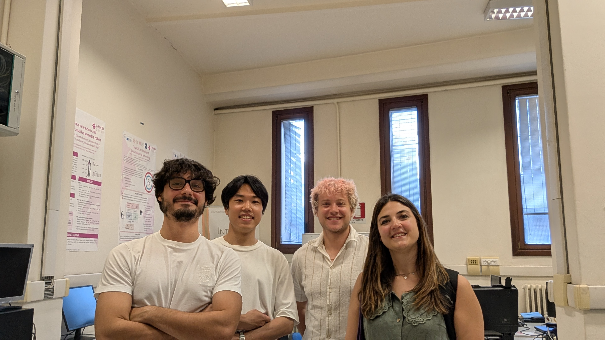
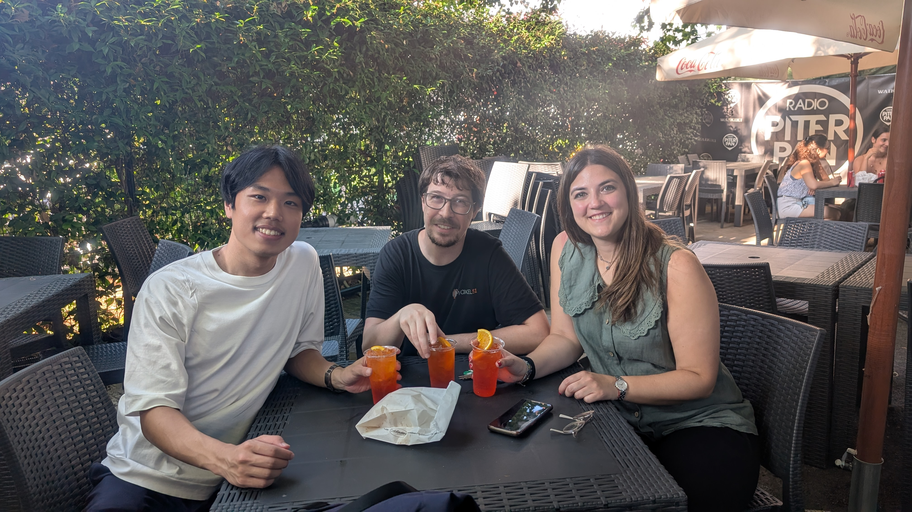
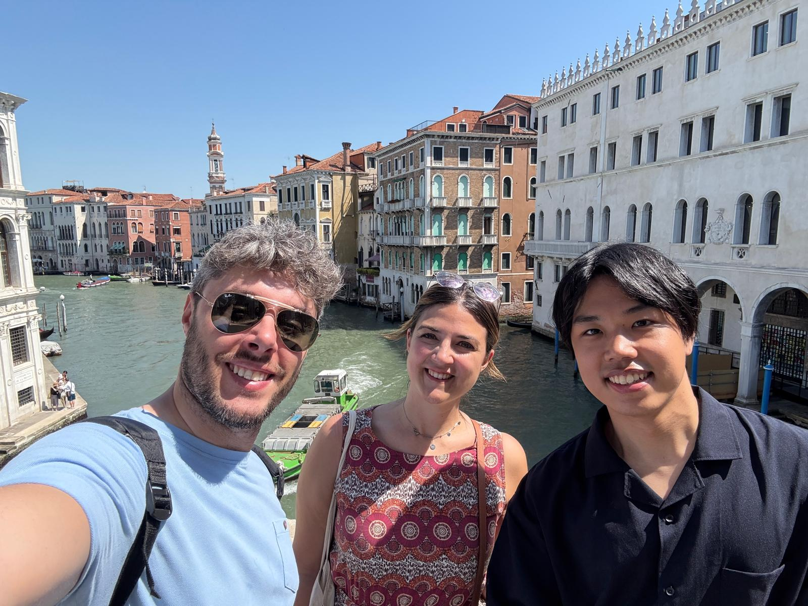

Lab tour by Dr. Gloria & I presented a lead-authored paper at IAS-19! @ Italy
Dr. Gloriaの研究室見学 & IAS-19で主著一件の発表を行いました。@イタリア
Dr. Gloriaさんの研究室見学と，the 19th International Conference on Intelligent Autonomous Systems (IAS-19)にて主著一件の発表を行いました．
計2週間のイタリア出張となりました．（ローマ→パドヴァ→ジェノヴァ）
I visited Dr. Gloria’s laboratory and gave a first-author presentation at the 19th International Conference on Intelligent Autonomous Systems (IAS-19).
This made for a two-week business trip to Italy (Rome → Padua → Genoa).
Dr. Gloriaさんの研究室見学 Visit to Dr. Gloria’s Laboratory
Gloriaさんが現在所属するInstitute of Cognitive Sciences and Technologies, National Research Council of Italy(CNR-ISTC)のオフィス（ローマ，パドヴァ）と，Gloriaさんの出身大学と研究室であるパドヴァ大学とIAS-Labをご案内していただきました． Gloriaさんとは私が修士1年の時に参加した国際学会IAS-17で知り合って以降やり取りを続けており，このようにお互いの研究室を訪問したり，共著で論文を投稿するまでに発展しました．このようなオンリーワンの経験をすることができ，後期博士課程に進学して心からよかったと思います．
I was kindly guided through the offices of the Institute of Cognitive Sciences and Technologies, National Research Council of Italy (CNR-ISTC) in Rome and Padua, where Dr. Gloria is currently affiliated, as well as her alma mater, the University of Padua, and her former research group, the IAS-Lab. I first met Gloria at IAS-17 when I was a first-year master’s student, and we have stayed in touch ever since. Our exchanges have developed to the point where we have visited each other’s laboratories and even co-authored papers. Being able to gain such a one-of-a-kind experience makes me truly glad that I continued on to the doctoral program.

IAS-Lab@University of Paduaでの集合写真
Group Photo at IAS-Lab, University of Padua

キャンパスツアー後，大学内の露店で飲んだスピリッツ．この時はちょうど試験期間でしたが，学生は日中は勉強して，夜は露店で飲んで楽しい気分で一日を締めくくるそうです．ここで飲んだスピリッツはアペロールというリキュールがベースになっていて甘くさっぱりしており，炎天下（日本と同じく32度くらい）で飲むには最高でした．
After the campus tour, we had spirits at a stall on campus. It happened to be exam season at the time, and I heard that students would study during the day and then end the day on a cheerful note by drinking at the stalls in the evening. The spirits we had there were based on a liqueur called Aperol, which was sweet and refreshing—perfect for drinking under the blazing sun (around 32°C, just like in Japan).

水の都ヴェネチアは実はパドヴァの隣町です．ヴェネチアも一緒にご案内していただき，一生の思い出になりました．
The City of Canals, Venice, is actually a neighboring town of Padua. Gloria also took me around Venice, which became a once-in-a-lifetime memory for me.
IAS-19での発表 Presentation at IAS-19
“Dynamic Window Pure Pursuit for Robot Path Tracking Considering Velocity and Acceleration Constraints”と題して，移動ロボットの速度・加速度制約を考慮可能な新たなPure Pursuit手法を発表しました．NHK学生ロボコンでPure Pursuitを実装していた学部3年生の頃の私に，将来新たなPure Pursuit手法を提案して論文を書いていることを伝えたら，大喜びすると思います．
本テーマは趣味の延長でやっていて思い入れが強いと同時に，インパクトも大きいと感じています．現在世界中で使用されているロボティクスプラットフォームであるROS2の自律移動パッケージNav2の標準実装されているPure Pursuit法であるRegulated Pure Pursuit (RPP)は2023年に論文が出版されていますが，RPP含む従来のPure Pursuitでは移動ロボットの速度・加速度制約を考慮した速度指令値を算出することができないという課題がありました．今回提案した手法はそれを解決した上で，RPPより追従誤差が低減するという結果も得られています．
本手法を多くの方に使ってもらえるように，Nav2のプラグインとして実装し，GitHubで公開しました．こちらの内容は同年開催のROSCon JPにて採択されています．詳細はこちら→https://decwest.github.io/news/rosconjp_2025/
Under the title “Dynamic Window Pure Pursuit for Robot Path Tracking Considering Velocity and Acceleration Constraints,” I presented a new Pure Pursuit method for mobile robots that takes into account both velocity and acceleration constraints. If I could tell my younger self—back when I was a third-year undergraduate student implementing Pure Pursuit for the NHK Student Robocon—that I would one day be proposing a new Pure Pursuit method and writing papers on it, he would be absolutely thrilled.
This theme is both deeply personal to me, since it grew out of my own interests, and also highly impactful. The Regulated Pure Pursuit (RPP) method, which is the Pure Pursuit implementation officially included in Nav2—the autonomous navigation package of ROS2, a robotics platform now used worldwide—was only published in 2023. However, a long-standing challenge with RPP and other traditional Pure Pursuit approaches is that they cannot generate velocity commands that consider a robot’s velocity and acceleration limits. The method I proposed addresses this limitation and, in fact, achieves lower tracking error than RPP.
To encourage wider use, I implemented this method as a Nav2 plugin and released it on GitHub. This work was also accepted for presentation at ROSCon JP in the same year. More details can be found here → https://decwest.github.io/news/rosconjp_2025/
IASのすゝめ Why I Recommend IAS
IASは比較的小規模の学会なので，はじめましての方ともラフにお話をすることができ，新たなつながりを多く得ることができます．毎日参加するたびにHi!と声をかけられる人が増えていく，そんな学会です． また，結構重鎮の先生方が参加してくださっています．IAS-17ではWolfram Burgard先生がお越しになっていてお話しさせていただき，一緒に取った写真は家宝にしています．
2027年開催のIAS-20は，実は指導教員の髙橋正樹先生がGeneral chairなので，日本の慶應義塾大学で開催です．本当に良い学会なので自分もお手伝いしたいと思うし，ぜひ多くの方に参加していただいて良さを知っていただけたらと思っています．
IAS is a relatively small-scale conference, which makes it easy to have casual conversations even with people you are meeting for the first time, and it is a great opportunity to build new connections. Each day you attend, more and more people will greet you with a “Hi!”—that’s the kind of conference it is. At the same time, quite a few distinguished professors also participate. At IAS-17, for example, Prof. Wolfram Burgard attended, and I was able to speak with him. The photo I took with him remains one of my treasures.
The upcoming IAS-20 in 2027 will actually be held at Keio University in Japan, with my supervisor, Prof. Masaki Takahashi, serving as General Chair. IAS is truly an excellent conference, and I hope to contribute to its organization myself. I also sincerely hope that many people will take part and experience its value.